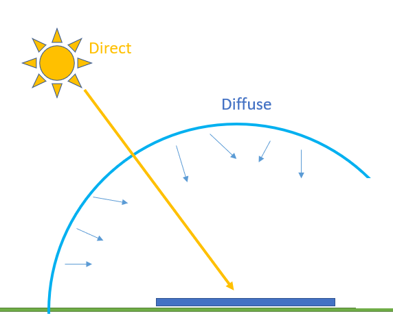
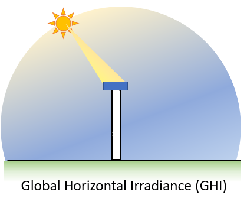

Tutorial 1 - Weather Data: Accesing it, understanding it, visualizing it!¶
This notebook explores a standard type of weather data, the typical meteorological year (TMY), and how to summarize it with Python and Pandas.

Steps:¶
Looking at a sample weather data file
Where to get weather data from?
Weather data to API
PV Concepts:¶
TMY
GHI, DNI, DHI
DryBulb, Wspd
Irradiance vs. Insolation
Python Concepts:¶
Exploring a Pandas dataframe (
df):len(),df.head(),df.keys()Ploting a Pandas dataframe (
df):df.plot()Aggregating data in a dataframe (
df):df.resample(freq).sum()Pandas
DateOffsets- shortcuts to set the frequency when resamplingGetting NREL irradiance data from the web based API using pvlib
Weather Data & PV¶
Weather and irradiance data are used as input to PV performance models.
These data are directly measured, derived from measured data, or simulated using a stochastic model.
If you want to learn more about irradiance data, you can visit the Solar RAdiometry webpage
Typical Meteorological Year¶
TMY datasets are intended to represent the weather for a typical year at a given location.
TMY datasets provide hourly solar irradiance, air temperature, wind speed, and other weather measurements for a hypothetical year that represents more or less a “median year” for solar resource.

TMY datasets are created by selecting individual months out of an extended period of weather measurememts (say, 20 years of data) to construct a single year’s worth of data. There are several methods for selecting which months to include, but the general idea is to calculate monthly summary statistics and take the month that lies in the middle of the distribution. For example, no two Januaries will be exactly the same, so summing the total solar irradiance for each January will give a normal distribution, and the month that falls closest to the median is chosen as the representative month. The same process is followed for February, March, and so on, and all twelve representative months are stitched together into a year-long dataset.
The oldest TMYs were calculated using data from the nearest weather station (airports and such). Today, it’s common to use TMYs calculated using simulated weather data from satellite imagery because of the improved spatial resolution.
To get a better feel for TMY data, we’ll first explore an example TMY dataset that is bundled with pvlib.
First Step: Import Libraries¶
In Python, some functions are builtin like print() but others must be imported before they can be used. For this notebook we’re going to import three packages:
pvlib - library for simulating performance of photovoltaic energy systems.
pandas - analysis tool for timeseries and tabular data
matplotlib - data visualization for Python
Some Python modules are part of the standard library, but are not imported with builtins. We’ll use the pathlib module which is useful for accessing files and folders.
import os # for getting environment variables
import pathlib # for finding the example dataset
import pvlib
import pandas as pd # for data wrangling
import matplotlib.pyplot as plt # for visualization
Query which version you are using of pvlib:
print(pvlib.__version__)
0.8.1
Reading a TMY dataset with pvlib¶
First, we’ll read the TMY dataset with pvlib.iotools.read_tmy3() which returns a Pandas DataFrame of the timeseries weather data and a second output with a Python dictionary of the TMY metadata like longitude, latitude, elevation, etc.
We will use the Python pathlib to get the path to the 'data' directory which comes with the pvlib package. Then we can use the slash operator, / to make the full path to the TMY file.
help(pvlib.iotools.read_tmy3)
Help on function read_tmy3 in module pvlib.iotools.tmy:
read_tmy3(filename, coerce_year=None, recolumn=True)
Read a TMY3 file in to a pandas dataframe.
Note that values contained in the metadata dictionary are unchanged
from the TMY3 file (i.e. units are retained). In the case of any
discrepancies between this documentation and the TMY3 User's Manual
[1]_, the TMY3 User's Manual takes precedence.
The TMY3 files were updated in Jan. 2015. This function requires the
use of the updated files.
Parameters
----------
filename : str
A relative file path or absolute file path.
coerce_year : None or int, default None
If supplied, the year of the index will be set to `coerce_year`, except
for the last index value which will be set to the *next* year so that
the index increases monotonically.
recolumn : bool, default True
If ``True``, apply standard names to TMY3 columns. Typically this
results in stripping the units from the column name.
Returns
-------
Tuple of the form (data, metadata).
data : DataFrame
A pandas dataframe with the columns described in the table
below. For more detailed descriptions of each component, please
consult the TMY3 User's Manual ([1]), especially tables 1-1
through 1-6.
metadata : dict
The site metadata available in the file.
Notes
-----
The returned structures have the following fields.
=============== ====== ===================
key format description
=============== ====== ===================
altitude Float site elevation
latitude Float site latitudeitude
longitude Float site longitudeitude
Name String site name
State String state
TZ Float UTC offset
USAF Int USAF identifier
=============== ====== ===================
============================= ======================================================================================================================================================
TMYData field description
============================= ======================================================================================================================================================
TMYData.Index A pandas datetime index. NOTE, the index is currently timezone unaware, and times are set to local standard time (daylight savings is not included)
TMYData.ETR Extraterrestrial horizontal radiation recv'd during 60 minutes prior to timestamp, Wh/m^2
TMYData.ETRN Extraterrestrial normal radiation recv'd during 60 minutes prior to timestamp, Wh/m^2
TMYData.GHI Direct and diffuse horizontal radiation recv'd during 60 minutes prior to timestamp, Wh/m^2
TMYData.GHISource See [1]_, Table 1-4
TMYData.GHIUncertainty Uncertainty based on random and bias error estimates see [2]_
TMYData.DNI Amount of direct normal radiation (modeled) recv'd during 60 mintues prior to timestamp, Wh/m^2
TMYData.DNISource See [1]_, Table 1-4
TMYData.DNIUncertainty Uncertainty based on random and bias error estimates see [2]_
TMYData.DHI Amount of diffuse horizontal radiation recv'd during 60 minutes prior to timestamp, Wh/m^2
TMYData.DHISource See [1]_, Table 1-4
TMYData.DHIUncertainty Uncertainty based on random and bias error estimates see [2]_
TMYData.GHillum Avg. total horizontal illuminance recv'd during the 60 minutes prior to timestamp, lx
TMYData.GHillumSource See [1]_, Table 1-4
TMYData.GHillumUncertainty Uncertainty based on random and bias error estimates see [2]_
TMYData.DNillum Avg. direct normal illuminance recv'd during the 60 minutes prior to timestamp, lx
TMYData.DNillumSource See [1]_, Table 1-4
TMYData.DNillumUncertainty Uncertainty based on random and bias error estimates see [2]_
TMYData.DHillum Avg. horizontal diffuse illuminance recv'd during the 60 minutes prior to timestamp, lx
TMYData.DHillumSource See [1]_, Table 1-4
TMYData.DHillumUncertainty Uncertainty based on random and bias error estimates see [2]_
TMYData.Zenithlum Avg. luminance at the sky's zenith during the 60 minutes prior to timestamp, cd/m^2
TMYData.ZenithlumSource See [1]_, Table 1-4
TMYData.ZenithlumUncertainty Uncertainty based on random and bias error estimates see [1]_ section 2.10
TMYData.TotCld Amount of sky dome covered by clouds or obscuring phenonema at time stamp, tenths of sky
TMYData.TotCldSource See [1]_, Table 1-5, 8760x1 cell array of strings
TMYData.TotCldUncertainty See [1]_, Table 1-6
TMYData.OpqCld Amount of sky dome covered by clouds or obscuring phenonema that prevent observing the sky at time stamp, tenths of sky
TMYData.OpqCldSource See [1]_, Table 1-5, 8760x1 cell array of strings
TMYData.OpqCldUncertainty See [1]_, Table 1-6
TMYData.DryBulb Dry bulb temperature at the time indicated, deg C
TMYData.DryBulbSource See [1]_, Table 1-5, 8760x1 cell array of strings
TMYData.DryBulbUncertainty See [1]_, Table 1-6
TMYData.DewPoint Dew-point temperature at the time indicated, deg C
TMYData.DewPointSource See [1]_, Table 1-5, 8760x1 cell array of strings
TMYData.DewPointUncertainty See [1]_, Table 1-6
TMYData.RHum Relatitudeive humidity at the time indicated, percent
TMYData.RHumSource See [1]_, Table 1-5, 8760x1 cell array of strings
TMYData.RHumUncertainty See [1]_, Table 1-6
TMYData.Pressure Station pressure at the time indicated, 1 mbar
TMYData.PressureSource See [1]_, Table 1-5, 8760x1 cell array of strings
TMYData.PressureUncertainty See [1]_, Table 1-6
TMYData.Wdir Wind direction at time indicated, degrees from north (360 = north; 0 = undefined,calm)
TMYData.WdirSource See [1]_, Table 1-5, 8760x1 cell array of strings
TMYData.WdirUncertainty See [1]_, Table 1-6
TMYData.Wspd Wind speed at the time indicated, meter/second
TMYData.WspdSource See [1]_, Table 1-5, 8760x1 cell array of strings
TMYData.WspdUncertainty See [1]_, Table 1-6
TMYData.Hvis Distance to discernable remote objects at time indicated (7777=unlimited), meter
TMYData.HvisSource See [1]_, Table 1-5, 8760x1 cell array of strings
TMYData.HvisUncertainty See [1]_, Table 1-6
TMYData.CeilHgt Height of cloud base above local terrain (7777=unlimited), meter
TMYData.CeilHgtSource See [1]_, Table 1-5, 8760x1 cell array of strings
TMYData.CeilHgtUncertainty See [1]_, Table 1-6
TMYData.Pwat Total precipitable water contained in a column of unit cross section from earth to top of atmosphere, cm
TMYData.PwatSource See [1]_, Table 1-5, 8760x1 cell array of strings
TMYData.PwatUncertainty See [1]_, Table 1-6
TMYData.AOD The broadband aerosol optical depth per unit of air mass due to extinction by aerosol component of atmosphere, unitless
TMYData.AODSource See [1]_, Table 1-5, 8760x1 cell array of strings
TMYData.AODUncertainty See [1]_, Table 1-6
TMYData.Alb The ratio of reflected solar irradiance to global horizontal irradiance, unitless
TMYData.AlbSource See [1]_, Table 1-5, 8760x1 cell array of strings
TMYData.AlbUncertainty See [1]_, Table 1-6
TMYData.Lprecipdepth The amount of liquid precipitation observed at indicated time for the period indicated in the liquid precipitation quantity field, millimeter
TMYData.Lprecipquantity The period of accumulatitudeion for the liquid precipitation depth field, hour
TMYData.LprecipSource See [1]_, Table 1-5, 8760x1 cell array of strings
TMYData.LprecipUncertainty See [1]_, Table 1-6
TMYData.PresWth Present weather code, see [2]_.
TMYData.PresWthSource Present weather code source, see [2]_.
TMYData.PresWthUncertainty Present weather code uncertainty, see [2]_.
============================= ======================================================================================================================================================
.. warning:: TMY3 irradiance data corresponds to the *previous* hour, so
the first index is 1AM, corresponding to the irradiance from midnight
to 1AM, and the last index is midnight of the *next* year. For example,
if the last index in the TMY3 file was 1988-12-31 24:00:00 this becomes
1989-01-01 00:00:00 after calling :func:`~pvlib.iotools.read_tmy3`.
.. warning:: When coercing the year, the last index in the dataframe will
become midnight of the *next* year. For example, if the last index in
the TMY3 was 1988-12-31 24:00:00, and year is coerced to 1990 then this
becomes 1991-01-01 00:00:00.
References
----------
.. [1] Wilcox, S and Marion, W. "Users Manual for TMY3 Data Sets".
NREL/TP-581-43156, Revised May 2008.
.. [2] Wilcox, S. (2007). National Solar Radiation Database 1991 2005
Update: Users Manual. 472 pp.; NREL Report No. TP-581-41364.
DATA_DIR = pathlib.Path(pvlib.__file__).parent / 'data'
df_tmy, meta_dict = pvlib.iotools.read_tmy3(DATA_DIR / '723170TYA.CSV', coerce_year=1990)
meta_dict # display the dictionary of metadata
{'USAF': 723170,
'Name': '"GREENSBORO PIEDMONT TRIAD INT"',
'State': 'NC',
'TZ': -5.0,
'latitude': 36.1,
'longitude': -79.95,
'altitude': 273.0}
Let’s display the first 4 lines of the dataframe
df_tmy.head(4)
| Date (MM/DD/YYYY) | Time (HH:MM) | ETR | ETRN | GHI | GHISource | GHIUncertainty | DNI | DNISource | DNIUncertainty | ... | Alb | AlbSource | AlbUncertainty | Lprecipdepth | Lprecipquantity | LprecipSource | LprecipUncertainty | PresWth | PresWthSource | PresWthUncertainty | |
|---|---|---|---|---|---|---|---|---|---|---|---|---|---|---|---|---|---|---|---|---|---|
| 1990-01-01 01:00:00-05:00 | 01/01/1988 | 01:00 | 0 | 0 | 0 | 1 | 0 | 0 | 1 | 0 | ... | 0.0 | ? | 0 | 0 | 1 | D | 9 | 0 | C | 8 |
| 1990-01-01 02:00:00-05:00 | 01/01/1988 | 02:00 | 0 | 0 | 0 | 1 | 0 | 0 | 1 | 0 | ... | 0.0 | ? | 0 | 0 | 1 | D | 9 | 0 | C | 8 |
| 1990-01-01 03:00:00-05:00 | 01/01/1988 | 03:00 | 0 | 0 | 0 | 1 | 0 | 0 | 1 | 0 | ... | 0.0 | ? | 0 | 0 | 1 | D | 9 | 0 | C | 8 |
| 1990-01-01 04:00:00-05:00 | 01/01/1988 | 04:00 | 0 | 0 | 0 | 1 | 0 | 0 | 1 | 0 | ... | 0.0 | ? | 0 | 0 | 1 | D | 9 | 0 | C | 8 |
4 rows × 71 columns
This dataset follows the standard format of handling timeseries data with pandas – one row per timestamp, one column per measurement type. Because TMY files represent one year of data (no leap years), that means they’ll have 8760 rows. The number of columns can vary depending on the source of the data.
print("Number of rows:", len(df_tmy))
print("Number of columns:", len(df_tmy.columns))
Number of rows: 8760
Number of columns: 71
You can access single rows by pointing to its number location (iloc) or by using the index name it has. In this case, that is a dateTime
df_tmy.iloc[0];
df_tmy.loc['1990-01-01 01:00:00-05:00'];
You can also print all the column names in the dataframe
df_tmy.keys()
Index(['Date (MM/DD/YYYY)', 'Time (HH:MM)', 'ETR', 'ETRN', 'GHI', 'GHISource',
'GHIUncertainty', 'DNI', 'DNISource', 'DNIUncertainty', 'DHI',
'DHISource', 'DHIUncertainty', 'GHillum', 'GHillumSource',
'GHillumUncertainty', 'DNillum', 'DNillumSource', 'DNillumUncertainty',
'DHillum', 'DHillumSource', 'DHillumUncertainty', 'Zenithlum',
'ZenithlumSource', 'ZenithlumUncertainty', 'TotCld', 'TotCldSource',
'TotCldUncertainty', 'OpqCld', 'OpqCldSource', 'OpqCldUncertainty',
'DryBulb', 'DryBulbSource', 'DryBulbUncertainty', 'DewPoint',
'DewPointSource', 'DewPointUncertainty', 'RHum', 'RHumSource',
'RHumUncertainty', 'Pressure', 'PressureSource', 'PressureUncertainty',
'Wdir', 'WdirSource', 'WdirUncertainty', 'Wspd', 'WspdSource',
'WspdUncertainty', 'Hvis', 'HvisSource', 'HvisUncertainty', 'CeilHgt',
'CeilHgtSource', 'CeilHgtUncertainty', 'Pwat', 'PwatSource',
'PwatUncertainty', 'AOD', 'AODSource', 'AODUncertainty', 'Alb',
'AlbSource', 'AlbUncertainty', 'Lprecipdepth', 'Lprecipquantity',
'LprecipSource', 'LprecipUncertainty', 'PresWth', 'PresWthSource',
'PresWthUncertainty'],
dtype='object')
There are 71 columns, which is quite a lot! For now, let’s focus just on the ones that are most important for PV modeling – the irradiance, temperature, and wind speed columns, and extract them into a new DataFrame.
Irradiance¶
Irradiance is an instantaneous measurement of solar power over some area. For practical purposes of measurement and interpretation, irradiance is expressed and separated into different components.

The units of irradiance are watts per square meter.
Wind¶
Wind speed is measured with an anemometer. The most common type is a the cup-type anemometer, shown on the right side of the picture below. The number of rotations per time interval is used to calculate the wind speed. The vane on the left is used to measure the direction of the wind. Wind direction is reported as the direction from which the wind is blowing.

Air temperature¶
Also known as dry-bulb temperature, is the temperature of the ambient air when the measurement device is shielded from radiation and moisture. The most common method of air temperature measurement uses a resistive temperature device (RTD) or thermocouple within a radiation shield. The shield blocks sunlight from reaching the sensor (avoiding radiative heating), yet allows natural air flow around the sensor. More accurate temperature measurement devices utilize a shield which forces air across the sensor.
Air temperature is typically measured on the Celsius scale.
Air temperature plays a large role in PV system performance as PV modules and inverters are cooled convectively by the surrounding air.

Downselect columns¶
There are a lot more weather data in that file that you can access. To investigate all the column headers, we used .keys() above. Always read the Instruction Manual for the weather files to get more details on how the data is aggregated, units, etc.
At this point we are interested in GHI, DHI, DNI, DryBulb and Wind Speed . For this NREL TMY3 dataset the units of irradiance are W/m², dry bulb temperature is in °C, and wind speed is m/s.
# GHI, DHI, DNI are irradiance measurements
# DryBulb is the "dry-bulb" (ambient) temperature
# Wspd is wind speed
df = df_tmy[['GHI', 'DHI', 'DNI', 'DryBulb', 'Wspd']]
# show the first 15 rows:
df.head(15)
| GHI | DHI | DNI | DryBulb | Wspd | |
|---|---|---|---|---|---|
| 1990-01-01 01:00:00-05:00 | 0 | 0 | 0 | 10.0 | 6.2 |
| 1990-01-01 02:00:00-05:00 | 0 | 0 | 0 | 10.0 | 5.2 |
| 1990-01-01 03:00:00-05:00 | 0 | 0 | 0 | 10.0 | 5.7 |
| 1990-01-01 04:00:00-05:00 | 0 | 0 | 0 | 10.0 | 5.7 |
| 1990-01-01 05:00:00-05:00 | 0 | 0 | 0 | 10.0 | 5.2 |
| 1990-01-01 06:00:00-05:00 | 0 | 0 | 0 | 10.0 | 4.1 |
| 1990-01-01 07:00:00-05:00 | 0 | 0 | 0 | 10.0 | 4.1 |
| 1990-01-01 08:00:00-05:00 | 9 | 9 | 1 | 10.0 | 5.2 |
| 1990-01-01 09:00:00-05:00 | 46 | 46 | 3 | 10.0 | 5.2 |
| 1990-01-01 10:00:00-05:00 | 79 | 78 | 4 | 10.6 | 5.2 |
| 1990-01-01 11:00:00-05:00 | 199 | 198 | 3 | 11.7 | 6.2 |
| 1990-01-01 12:00:00-05:00 | 261 | 260 | 3 | 11.7 | 5.2 |
| 1990-01-01 13:00:00-05:00 | 155 | 155 | 0 | 11.7 | 5.2 |
| 1990-01-01 14:00:00-05:00 | 144 | 144 | 2 | 11.7 | 3.1 |
| 1990-01-01 15:00:00-05:00 | 131 | 131 | 1 | 11.1 | 4.1 |
Plotting time series data with pandas and matplotlib¶
Let’s make some plots to get a better idea of what TMY data gives us.
Irradiance¶
First, the three irradiance fields:
first_week = df.head(24*7) # Plotting 7 days, each one has 24 hours or entries
first_week[['GHI', 'DHI', 'DNI']].plot()
plt.ylabel('Irradiance [W/m$^2$]');

Let’s control the parameters a bit more
birthday = df.loc['1990-11-06':'1990-11-06']
plt.plot(birthday['DNI'], color='r')
plt.plot(birthday['DHI'], color='g', marker='.')
plt.plot(birthday['GHI'], color='b', marker='s')
plt.ylabel('Irradiance [W/m$^2$]');

Exercise¶
How does the Irradiance look like in YOUR birthday?
Hint: the next cell is ‘Markdown’, you need to switch it to ‘Code’ for it to run
birthday = df.loc[] # Type your birthday here using the 1990 year, i.e. ‘1990-11-06’:’1990-11-06’ plt.plot(birthday[‘DNI’], color=’g’) plt.plot(birthday[‘DHI’], color=’b’, marker=’.’) plt.plot(birthday[‘GHI’], color=’r’, marker=’s’) plt.ylabel(‘Irradiance [W/m\(^2\)]’);
GHI, DHI, and DNI are the three “basic” ways of measuring irradiance, although each of them is measured in units of power per area (watts per square meter):
GHI: Global Horizontal Irradiance; the total sunlight intensity falling on a horizontal plane
DHI: Diffuse Horizontal Irradiance; the subset of sunlight falling on a horizontal plane that isn’t coming directly from the sun (e.g., the light that makes the sky blue)
DNI: Direct Normal Irradiance; the subset of sunlight coming directly from the sun



Later tutorials will show how these three values are used in PV modeling. For now, let’s just get a qualitative understanding of the differences between them: looking at the above plot, there is a pattern where when DNI is high, DHI is low. The sun puts out a (roughly) constant amount of energy, which means photons either make it through the atmosphere without scattering and are counted as direct irradiance, or they tend to get scattered and become part of the diffuse irradiance, but not both. Looking at DNI makes it easy to pick out which hours are cloud and which are sunny – most days in January are rather overcast with low irradiance, but the sun does occasionally break through.
In addition to daily variation, there is also seasonal variation in irradiance. Let’s compare a winter week with a summer week, using pandas to select out a summertime subset. Notice the increased intensity in summer – GHI peaks around 900 W/m^2, whereas in winter the maximum was more like 500 W/m^2.
summer_week = df.loc['1990-06-01':'1990-06-08']
summer_week[['GHI', 'DHI', 'DNI']].plot()
plt.ylabel('Irradiance [W/m$^2$]');

Temperature¶
Next up is temperature:
first_week['DryBulb'].plot()
plt.ylabel('Ambient Temperature [°C]');


Aggregating hourly data to monthly summaries¶
Pandas makes it easy to roll-up timeseries data into summary values. We can use the DataFrame.resample() function with DateOffsets like 'M' for months. For example, we can calculate total monthly GHI as a quick way to visualize the seasonality of solar resource:
# summing hourly irradiance (W/m^2) gives insolation (W h/m^2)
monthly_ghi = df['GHI'].resample('M').sum()
monthly_ghi.head(4)
1990-01-31 00:00:00-05:00 74848
1990-02-28 00:00:00-05:00 85751
1990-03-31 00:00:00-05:00 131766
1990-04-30 00:00:00-05:00 162302
Freq: M, Name: GHI, dtype: int64
monthly_ghi = monthly_ghi.tz_localize(None) # don't need timezone for monthly data
monthly_ghi.plot.bar()
plt.ylabel('Monthly Global Horizontal Irradiance\n[W h/m$^2$]');

We can also take monthly averages instead of monthly sums:
fig, ax1 = plt.subplots()
ax2 = ax1.twinx() # add a second y-axis
monthly_average_temp_wind = df[['DryBulb', 'Wspd']].resample('M').mean()
monthly_average_temp_wind['DryBulb'].plot(ax=ax1, c='tab:blue')
monthly_average_temp_wind['Wspd'].plot(ax=ax2, c='tab:orange')
ax1.set_ylabel(r'Ambient Temperature [$\degree$ C]')
ax2.set_ylabel(r'Wind Speed [m/s]')
ax1.legend(loc='lower left')
ax2.legend(loc='lower right');

Exercise¶
Plot the Average DNI per Day
try:
daily_average_DNI = df[['']].resample('').mean() # Add the column name, and resample by day. Month is 'M', day is..
daily_average_DNI.plot()
except:
print("You haven't finished this exercise correctly, try again!")
You haven't finished this exercise correctly, try again!
Where to get Free Solar Irradiance Data?¶
There are many different sources of solar irradiance data. For your projects, these are some of the most common:
TMY3/TMY2 - like the data we loaded earlier on this example. This database of TMY3
.csvfiles and TMY2 files have been archived by NREL.NSRDB - National Solar Radiation Database. You can access data through the website for many locations accross the world, or you can use their web API to download data programmatically. An “API” is an “application programming interface”, and a “web API” is a programming interface that allows you to write code to interact with web services like the NSRDB.
EPW - Energy Plus Weather data is available for many locations accross the world. It’s in its own format file (‘EPW’) so you can’t open it easily in a spreadsheet program like Excel, but you can use
pvlib.iotools.read_epw()to get it into a dataframe and use it.PVGIS - Free global weather data provided by the European Union and derived from many govermental agencies including the NSRDB. PVGIS also provides a web API. You can get PVGIS TMY data using
pvlib.iotools.get_pvgis_tmy().Perhaps another useful link: https://sam.nrel.gov/weather-data.html
Where else can you get historical irradiance data?¶
There are several commercial providers of solar irradiance data. Data is available at different spatial and time resolutions. Each provider offers data under subscription that will provide access to irradiance (and other weather variables) via API to leverage in python.

NREL API Key¶
At the NREL Developer Network, there are APIs to a lot of valuable solar resources like weather data from the NSRDB, operational data from PVDAQ, or indicative calculations using PVWatts. In order to use these resources from NREL, you need to register for a free API key. You can test out the APIs using the DEMO_KEY but it has limited bandwidth compared to the usage limit for registered users. NREL has some API usage instructions, but pvlib has a few builtin functions, like pvlib.iotools.get_psm3(), that wrap the NREL API, and call them for you to make it much easier to use. Skip ahead to the next section to learn more. But before you do…
Please pause now to visit https://developer.nrel.gov/signup/ and get an API key.
Application Programming Interface (API)¶
What exactly is an API? Nowadays, the phrase is used interchangeably with a “web API” but in general an API is just a recipe for how to interface with a application programmatically, IE: in code. An API could be as simple as a function signature or its published documentation, EG: the API for the solarposition function is you give it an ISO8601 formatted date with a timezone, the latitude, longitude, and elevation as numbers, and it returns the zenith and azimuth as numbers.
A web API is the same, except the application is a web service, that you access at its URL using web methods. We won’t go into too much more detail here, but the most common web method is GET which is pretty self explanatory. Look over the NREL web usage instructions for some examples, but interacting with a web API can be as easy as entering a URL into a browser. Try the URL below to get the PVWatts energy output for a fixed tilt site in Broomfield, CO.
In addition to just using your browser, you can also access web APIs programmatically. The most popular Python package to interact with web APIs is requests. There’s also free open source command-line tools like cURL and HTTPie, and a popular nagware/freemium GUI application called Postman.
If you have an NREL API key please enter it in the next cell.
NREL_API_KEY = None # <-- please set your NREL API key here
# note you must use "quotes" around your key, for example:
# NREL_API_KEY = 'DEMO_KEY' # single or double both work fine
# during the live tutorial, we've stored a dedicated key on our server
if NREL_API_KEY is None:
try:
NREL_API_KEY = os.environ['NREL_API_KEY'] # get dedicated key for tutorial from servier
except KeyError:
NREL_API_KEY = 'DEMO_KEY' # OK for this demo, but better to get your own key
Fetching TMYs from the NSRDB¶
The example TMY dataset used here is from an airport in North Carolina, but what if we wanted to model a PV system somewhere else? The NSRDB, one of many sources of weather data intended for PV modeling, is free and easy to access using pvlib. As an example, we’ll fetch a TMY dataset for Albuquerque, New Mexico at coordinates (35.0844, -106.6504). We use pvlib.iotools.get_psm3() which returns a Python dictionary of metadata and a Pandas dataframe of the timeseries weather data.
metadata, df_abq = pvlib.iotools.get_psm3(
latitude=35.0844, longitude=-106.6504,
api_key=NREL_API_KEY,
email='mark.mikofski@dnv.com', # <-- any email works here fine
names='tmy')
metadata
{'Source': 'NSRDB',
'Location ID': '94139',
'City': '-',
'State': '-',
'Country': '-',
'Latitude': 35.09,
'Longitude': -106.66,
'Time Zone': -7,
'Elevation': 1496,
'Local Time Zone': -7,
'Dew Point Units': 'c',
'DHI Units': 'w/m2',
'DNI Units': 'w/m2',
'GHI Units': 'w/m2',
'Temperature Units': 'c',
'Pressure Units': 'mbar',
'Wind Direction Units': 'Degrees',
'Wind Speed': 'm/s',
'Surface Albedo Units': 'N/A',
'Version': '3.2.0'}
TMY datasets from the PSM3 service of the NSRDB are timestamped using the real year that the measurements came from. The pvlib.iotools.read_tmy3() function had a coerce_year argument to force everything to align to a single dummy year, but pvlib.iotools.get_psm3() doesn’t have that feature. For convenience let’s standardize the data to 1990 and then compare monthly GHI to the North Carolina location:
df_abq['Year'] = 1990
df_abq.index = pd.to_datetime(df_abq[['Year', 'Month', 'Day', 'Hour']])
ghi_comparison = pd.DataFrame({
'NC': monthly_ghi, # using the monthly values from earlier
'NM': df_abq['GHI'].resample('M').sum(),
})
ghi_comparison.plot.bar()
plt.ylabel('Monthly GHI [W h/m^2]');

It’s not too surprising to see that our New Mexico location is significantly sunnier than the one in North Carolina.

This work is licensed under a Creative Commons Attribution 4.0 International License.